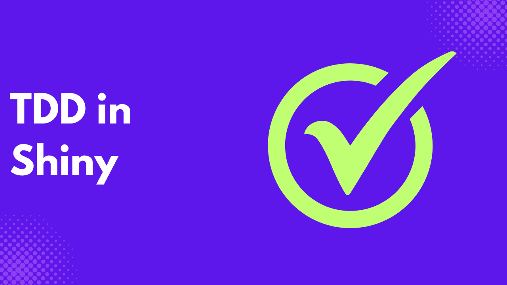

What if you could write less code and have more confidence that it will work? When building a shiny application, the larger your codebase, the easier it is to break things while adding features to your application. Writing tests makes it easy to see where and what is breaking, and how to fix it.
In this article, you will learn how to build a Shiny application using test-driven development, and why it is the best approach.
Test-driven development (TDD) is a way of testing applications, where you write tests before writing code, and you keep on editing the code until the test passes.
Unlike the traditional approach of writing tests, after writing all the application code. TDD is an iterative process and ensures that code is refined until the test is passed. TDD ensures that errors are caught on time, which makes debugging easier.
What Makes Testing Shiny Apps Uniquely Challenging?
Unlike traditional web applications, which follow a request-response cycle, where a user makes a request, and the server responds. Shiny applications are based on reactive programming, which means that both the input and outputs are connected, and the output automatically updates when the input is changed.
The way Shiny operates, outputs can change without a user’s action, and a small change can affect other outputs randomly.
Due to Shiny reactive programming, Shiny stores states between interactions in reactive values, reactive expressions, and observers. Side effects, such as database queries, dynamic interaction, and file uploads, can introduce complexity.
Although it’s commonly believed that UI can’t be tested due to its interactive nature, you must test your Shiny apps, bearing in mind their reactive nature and how dynamic their state is.
Reimagining TDD for Reactive Systems
Test-Driven Development (TDD) is a software design approach where tests are written before the actual code. TDD follows three major circles:
- Red: This is where you write the tests that fail for a feature.
- Green: You write the minimum code required to pass the test.
- Refactor: You improve the code while passing the test.
You might think it is challenging to implement TDD due to the reactive flow of Shiny, but TDD can actually enhance how we build them.
Just like reactivity, TDD also provides immediate feedback during development, and you can test a reactive flow as input changes.
Shiny is a combination of UI and logic, which can make code complex to test. You must make your code modular by separating various components into functions and modules to make them testable.
You can also move functions out of reactivity. This makes it easy to test your functions and test reactivity separately.
Setting Up the Environment
To employ TDD in Shiny, ensure you conduct unit tests, reactive tests, and UI simulations. One of the major libraries you will use is pytest; a Python testing framework.
While implementing tests, it’s important to keep your application modular to make it testable and separate pure functions from reactivity or UI.
Here is an example project directory with tests for a Shiny application.
my_shiny_app/
│
├── app.py # Main Shiny app entry point
├── logic/
│ └── calc.py # Pure functions (business logic)
├── ui/
│ └── layout.py # UI definition (optional, for separation)
├── server/
│ └── handlers.py # Reactive logic, observers
├── tests/
│ ├── test_calc.py # Tests for pure functions
│ └── test_handlers.py # Tests for reactive server logic
├── conftest.py # Pytest fixtures (optional)
└── requirements.txtWhen writing your tests, start with the simplest ones, which are pure functions, as they don’t depend on reactivity or UI.
Testing the Core Logic Separately
Your shiny applications are usually a mix of reactivity and logic, but you can always extract this logic from your reactive code to make it testable. This logic can include calculations, transformations, and other operations.
For example, if your Shiny application allows users to summarize a dataset. Instead of embedding the logic in a reactive expression, you can extract it.
#logic/stats.py
import pandas as pd
def summarize_sales(df, group_by="region"):
"""Summarize total and average sales by group."""
if group_by not in df.columns:
raise ValueError(f"Column '{group_by}' not found in dataframe.")
summary = df.groupby(group_by)["sales"].agg(["sum", "mean"]).reset_index()
return summary#tests/test_stats.py
import pandas as pd
from logic.stats import summarize_sales
def test_summarize_sales_basic():
df = pd.DataFrame({
"region": ["East", "West", "East", "West"],
"sales": [100, 200, 300, 400]
})
summary = summarize_sales(df)
assert summary.shape == (2, 3)
assert set(summary["region"]) == {"East", "West"}
assert summary.loc[summary["region"] == "East", "sum"].iloc[0] == 400
def test_summarize_sales_invalid_column():
df = pd.DataFrame({
"area": ["A", "B"],
"sales": [100, 200]
})
try:
summarize_sales(df, group_by="region")
except ValueError as e:
assert "not found" in str(e)By isolating your logic into pure functions, you use them both in your application and in tests. It also makes it easy to refactor, without breaking any code. And you can call the application without triggering any reaction.
Testing Shiny Reactive Functions
You need to understand Python Shiny reactivity and how to simulate it in tests, without the need for a complete browser UI or manual clicks.
Shiny reactivity is made of the following :
reactive(): This allows you to wrap a function, such that it updates when the value of its dependencies changes.render_*(): These are specialized reactive outputs that display information coming from the UI. Examples arerender_plot(),render_table(), and so on.input- is a user-provided reactive value.
Here is an example of a server logic that implements the above:
from shiny import reactive, render
from shiny.express import input, output
@reactive.calc
def filtered_data():
return dataset[dataset["category"] == input.category()]
@output
@render.table
def summary_table():
return filtered_data().groupby("type").sum()In the above example, a user inputs a category and expects a filtered summary of data. We want to ensure that the user input is accurately filtered and displayed to the user. You can simulate the above reactivity like this.
import pandas as pd
from shiny import reactive
def test_filtered_data():
data = pd.DataFrame({"category": ["A", "B", "A"], "value": [1, 2, 3]})
@reactive.Calc
def category_input():
return "A"
@reactive.Calc
def filtered():
return data[data["category"] == category_input()]
assert filtered().shape[0] == 2 If you notice, each function is wrapped with a reactive.Calc() decorator to make it reactive, and it’s fed into the filtered() function as an input.
The test only passes when the shape of the data is equal to the digit specified. This way, you can test for various inputs expected from a user.
UI Testing: How Far Should You Go?
Most of the time, there are various arguments on whether you should go for browser-based testing or logic-level testing.
There are several factors to consider, and the following table provides a tradeoff analysis of both methods.
| Approach | Pros | Cons |
|---|---|---|
| Logic-level testing(reactive functions, outputs) | Fast, deterministic, easy to debug, and encourages modular design | Doesn’t catch integration bugs, No UI assurance |
| Browser-based testing(full end-to-end) | Captures real-world behavior, Tests JavaScript/UI bugs | Slower, flakier, and harder to debug, Higher maintenance |
Some tools you should consider while building browser tests are:
- Playwright: Fast and provides support for multiple browsers.
- Selenium: Heavier, but behaviour is highly customizable
Even though some are of the view that you should not test UI, I advise that you only test key components of your UI and not everything.
Browser tests are best suited if you have form submissions, interactive plots, or downloads in your Shiny application. A common rule of thumb is to test your logic thoroughly and UI sparingly and intentionally.
You can test critical workflows, such as file upload, file download, and data summary. Also, prioritize dynamic interactions over static levels, layout, or CSS.
Common Pitfalls and Misconceptions
As you decide to implement TDD in your workflow, there are a lot of traps you can fall into. Here are some things you need to know.
TDD doesn’t mean writing all tests first.
A common misconception when implementing TDD is that you need to write all your tests first, which is not true.
You don’t have to write all your tests and account for all edge cases; you need to take TDD as a cycle, not a phase.
You write the minimum amount of code needed to pass a test, then you iterate. This ensures that you grow the system to ensure safety and clarity.
It’s not about perfection, but feedback loops.
Most developers abandon TDD when they see their tests not covering everything, which misses the point of TDD.
You need to take TDD like a feedback loop, where you silently refactor your code without the fear of breaking things.
Over-mocking, when your tests know too much
When building reactive applications, mocking is handy. However, you can fall into the trap of mocking too much, which means your tests no longer reflect real user behavior.
When this happens, your tests always pass because the mocks were rigged, not that the logic works. And when you change the implementation, your application might work while your tests break.
One way to determine if you are over-mocking is by mocking the same internal functions across multiple tests, or by having tests pass with broken logic due to the mock’s lack of realism.
The Long-Term Payoff
When starting your project, you might see TDD as a drag as you have to write tests and then ensure they pass, although in the long run, this is more beneficial for your workflow.
TDD enables you to think in terms of small, testable units, and for Python Shiny applications that can evolve into complex interactive dashboards or data tools. TDD ensures that new changes don’t unexpectedly break existing behaviours.
As Shiny applications expand and become tightly coupled, TDD makes it easier to isolate, test, and maintain features.
TDD also serves as your documentation, which evolves alongside your codebase. For Python Shiny applications, your tests can clarify expected data flow, user interactions, and reactive behaviours more effectively than a README.
Conclusion
TDD is a fundamental way to build robust, interactive applications, and it’s possible. It enforces discipline on you and brings clarity when collaborating with others.
By writing tests first, you force your code to earn its place and stop guessing how your application behaves. Hence, every line matters, and every feature has its purpose. In this light, TDD is less about testing and more about designing software that meets its requirements.
Need Help with Data? Let’s Make It Simple.
At LearnData.xyz, we’re here to help you solve tough data challenges and make sense of your numbers. Whether you need custom data science solutions or hands-on training to upskill your team, we’ve got your back.
📧 Shoot us an email at admin@learndata.xyz—let’s chat about how we can help you make smarter decisions with your data.